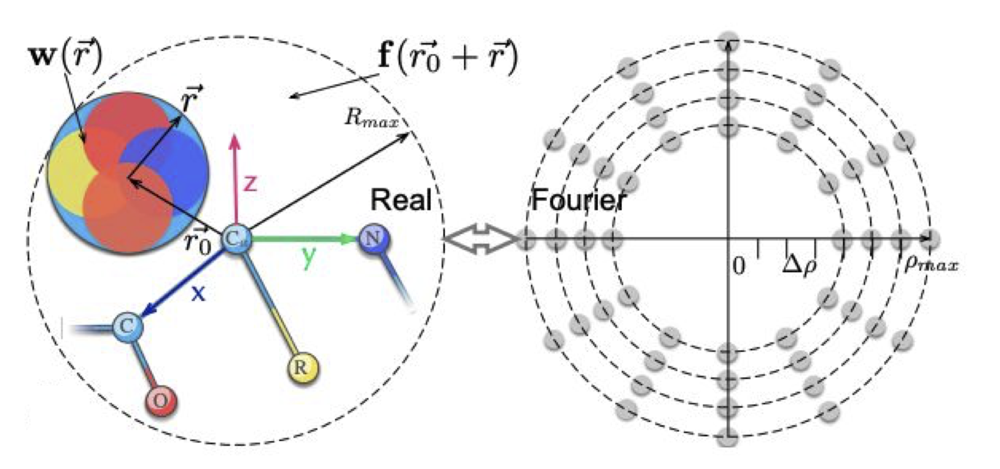

Publications
Equivariant 3D-Conditional Diffusion Models for Molecular Linker Design
I. Igashov, H. Stärk, C. Vignac, V. Satorras, P. Frossard, M. Welling, M. Bronstein, B. Correia
Under Review (2022)
Fragment-based drug discovery has been an effective paradigm in early-stage drug development. An open challenge in this area is designing linkers between disconnected molecular fragments of interest to obtain chemically-relevant candidate drug molecules. In this work, we propose DiffLinker, an E(3)-equivariant 3D-conditional diffusion model for molecular linker design. Given a set of disconnected fragments, our model places missing atoms in between and designs a molecule incorporating all the initial fragments. Unlike previous approaches that are only able to connect pairs of molecular fragments, our method can link an arbitrary number of fragments. Additionally, the model automatically determines the number of atoms in the linker and its attachment points to the input fragments. We demonstrate that DiffLinker outperforms other methods on the standard datasets generating more diverse and synthetically-accessible molecules. Besides, we experimentally test our method in real-world applications, showing that it can successfully generate valid linkers conditioned on target protein pockets.
Paper CodeDecoding Surface Fingerprints for Protein-Ligand Interactions
I. Igashov, A. Jamasb, A. Sadek, F. Sverrisson, A. Schneuing, T. Blundell, P. Liò, M. Bronstein, B. Correia
MLDD workshop, ICLR 2022
We propose a new computational workflow for high-throughput fragment-based screening and binding affinity prediction where we leverage the available protein-ligand complex structures using a state-of-the-art protein surface embedding framework (dMaSIF). We developed a tool capable of finding suitable ligands and fragments for a given protein pocket solely based on protein surface descriptors, that capture chemical and geometric features of the target pocket. The identified fragments can be further combined into novel ligands. Using the structural data, our ligand discovery pipeline learns the signatures of interactions between surface patches and small pharmacophores. On a query target pocket, the algorithm matches known target pockets and returns either potential ligands or identifies multiple ligand fragments in the binding site. Our binding affinity predictor is capable of predicting the affinity of a given protein-ligand pair, requiring only limited information about the ligand pose. This enables screening without the costly step of first docking candidate molecules. Our framework will facilitate the design of ligands based on the target’s surface information. It may significantly reduce the experimental screening load and ultimately reveal novel chemical compounds for targeting challenging proteins.
Paper
6DCNN with roto-translational convolution filters for volumetric data processing
D. Zhemchuzhnikov, I. Igashov, S. Grudinin
36th AAAI Conference on Artificial Intelligence, 2022
In this work, we introduce 6D Convolutional Neural Network (6DCNN) designed to tackle the problem of detecting relative positions and orientations of local patterns when processing three-dimensional volumetric data. 6DCNN also includes SE(3)-equivariant message-passing and nonlinear activation operations constructed in the Fourier space. Working in the Fourier space allows significantly reducing the computational complexity of our operations. We demonstrate the properties of the 6D convolution and its efficiency in the recognition of spatial patterns. We also assess the 6DCNN model on several datasets from the recent CASP protein structure prediction challenges. Here, 6DCNN improves over the baseline architecture and also outperforms the state of the art.
Paper
VoroCNN: Deep convolutional neural network built on 3D Voronoi tessellation of protein structures
I. Igashov, K. Olechnovič, M. Kadukova, Č. Venclovas, S. Grudinin
Bioinformatics, 2021
Motivation: Effective use of evolutionary information has recently led to tremendous progress in computational prediction of three-dimensional (3D) structures of proteins and their complexes. Despite the progress, the accuracy of predicted structures tends to vary considerably from case to case. Since the utility of computational models depends on their accuracy, reliable estimates of deviation between predicted and native structures are of utmost importance.
Results: For the first time we present a deep convolutional neural network (CNN) constructed on a Voronoi tessellation of 3D molecular structures. Despite the irregular data domain, our data representation allows to efficiently introduce both convolution and pooling operations of the network. We trained our model, called VoroCNN, to predict local qualities of 3D protein folds. The prediction results are competitive to the state of the art and superior to the previous 3D CNN architectures built for the same task. We also discuss practical applications of VoroCNN, for example, in the recognition of protein binding interfaces
Project Page GitLab Paper Poster
Spherical convolutions on molecular graphs for protein model quality assessment
I. Igashov, N. Pavlichenko, S. Grudinin
Machine Learning: Science and Technology, 2021
Processing information on 3D objects requires methods stable to rigid-body transformations, in particular rotations, of the input data. In image processing tasks, convolutional neural networks achieve this property using rotation-equivariant operations. However, contrary to images, graphs generally have irregular topology. This makes it challenging to define a rotation-equivariant convolution operation on these structures. In this work, we propose Spherical Graph Convolutional Network (S-GCN) that processes 3D models of proteins represented as molecular graphs. In a protein molecule, individual amino acids have common topological elements. This allows us to unambiguously associate each amino acid with a local coordinate system and construct rotation-equivariant spherical filters that operate on angular information between graph nodes. Within the framework of the protein model quality assessment problem, we demonstrate that the proposed spherical convolution method significantly improves the quality of model assessment compared to the standard message-passing approach. It is also comparable to state-of-the-art methods, as we demonstrate on Critical Assessment of Structure Prediction (CASP) benchmarks. The proposed technique operates only on geometric features of protein 3D models. This makes it universal and applicable to any other geometric-learning task where the graph structure allows constructing local coordinate systems.
Project Page GitLab Paper Poster